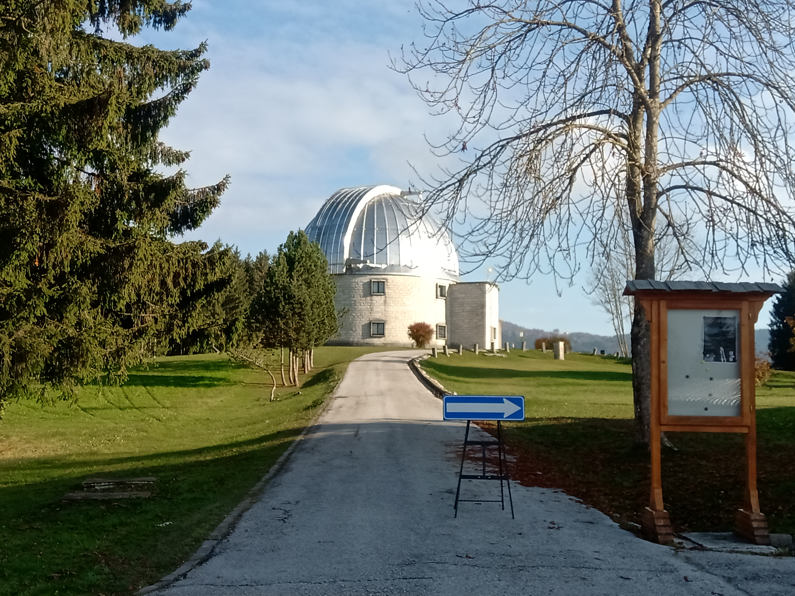

Academics

Phd in astrophysics (reading)
Extragalactic Research group.
Faculty of Physics, Astronomy and Informatics, University of Nicolaus Copernicus in Torun, Poland.
Supervisor: Dr Maciej Kaprowski.
MSc in astrophysics and Cosmology
Department of Astronomy, University of Padova, Italy.
Supervisor: Dr Paolo Cassata.
BSc in Natural Science(Physics)
Department of Physics, The Open University of Sri Lanka.
Supervisor: Dr Susira Perera, Dr Janaka Addasuriya and Dr Chandana Jayaratne.
Research & work experiences

Research
PhD Research project
Title: Time evolution of the star formation rate density in the early Universe.
The most common approach, used for determining the IR luminosity in the absence of direct far-IR detections,
is to apply the relationship between the rest-frame UV slope, β, where fλℵ λβ , and the infrared excess, IRX, defined as the ratio of the IR and UV luminosities.
However, the current estimates based on observational data extend only out to z ~ 4. This is caused by the fact that these studies are mostly based on limited samples of UV/optical-selected Lyman break galaxies (LBGs), due to the simplicity of the source selection techniques (Steidel et al. 1996). The more updated selection methods,
based on the spectral energy distribution (SED) fitting, produce much bigger and cleaner samples (e.g. McLeod et al. 2020).
In addition, the far-IR SCUBA-2 images available in this project, cover the area many times larger than in the previous studies (i.e. 5 times the area used in Koprowski et al. 2018). In this task, performed mainly by me, the IRX- relationship will be re-calibrated out to z ~ 7 by
stacking ~ million of optically-selected galaxies in the IR maps, in distinct bins of and redshift.
In recent years, measurements of cold gas in galaxies have become an effective tool for investigating the nature and evolution of those stellar structures.
The aim of this project is to constrain the gas content of 8 main-sequence galaxies for which we have
ALMA data that target their CO(6-5) or CO(5-4) line (and the surrounding continuum).
This project is the extension of a previous project (Cassata et al., 2020), that detected two CO transitions, and the
surrounding continuum,
in a similar sample of 5 galaxies. For the first part of this research,
the CASA tool was used to handle the datacubes and identify the CO line and the surrounding continuum. H
owever, since the project was never completed, the achieved rms is significantly worse than the requirement requested in the project, and 3× worse than for the Cassata et al., 2020 sample.
As a consequence, the CO lines arenot detected, and for 5 out of 8 galaxies the continuum is detected at ∼ 500 with signal-to-noise ratio (S/N) > 2–7. We then converted these dust continuum fluxes into gas masses, obtaining values
between 7.18 × 1010⊙ − 16.83 × 1010 ⊙. For the second part, we fitted the broad-band photometry for the 8 objects in the sample, from the UV to the FIR (including the new band4 ALMA data) with MAGPHYS. Our results show that there are no huge differences with the Cassata+2020 sample: 2 out of 8 galaxies lie close to the average star-forming main-sequence at ∼ 3,
while the other 6 lie closer to the transition line between MS and Starbursts. In addition, the stellar mass range of these 8 MS galaxies is between log(∗ (10.15 - 11.58)). We found that the gas fraction of our eight galaxies cover a broad range of values, with gas fractions between 22% and 86%. Similarly, we also find that these galaxies have depletion times in the range 0.04 Gyr < < 0.51 Gyr.
Other Research projects
Research internship: International School for Advanced Studies(SISSA), Italy (June 2021- September 2021).
Title: A comprehensive X-ray view of the active nucleus in NGC 4258
Supervisor: Dr Alberto Massini.
Title: A project on probing emission-line properties of galaxies in the local Universe. (April 2019 - 2020)
Supervisor: Dr Themiya Nanayakkara, Postdoctoral Fellow, Swinburne University, Australia.
Undergraduate Research
Title: Analysis of type II and type III solar radio burst using e- Calisto system. 2016 - 2017.
Work experiences
Head of the academic staff(2018-2021)
I was a Head of the academic staff at the Institute of Astronomy, Sri Lanka. During this time, we presented numerous Astronomy courses to Sri Lankan locals and launched the observance of numerous sun observation camps and night sky camps for the
local community. During my tenure, we constructed a research unit and observatory that is largely operational today. Under my direction,
university students and I conducted research that has been presented at international conferences.
Teaching Assistant( demomstrator in Physics) at Department of physics, The Open University of Sri Lanka (2017-2019)